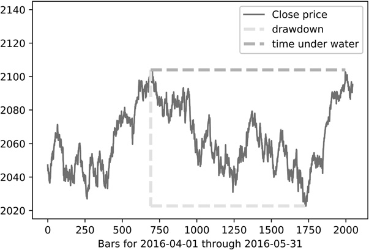
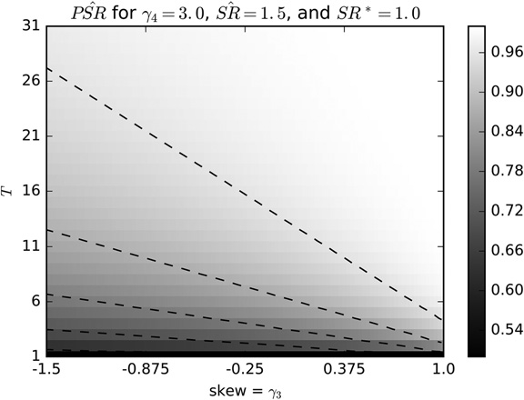
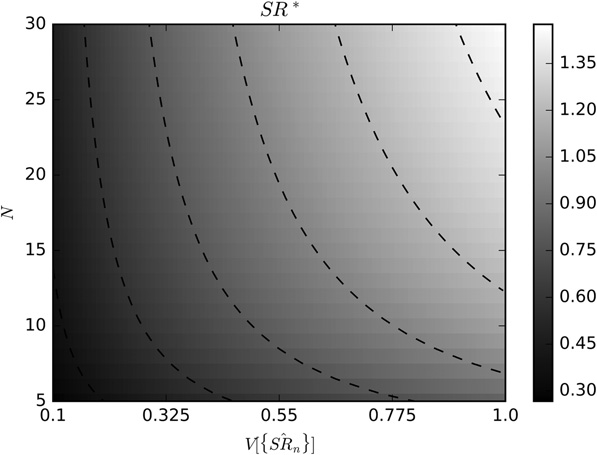

第三部分：回测
回测统计
14.1 动机
前几章介绍了三种回测范式：第一，历史模拟，即第 11 章和第 12 章的滚动前推法；第二，情景模拟，即第 12 章的 CV 和 CPCV 方法；第三，第 13 章的合成数据模拟。无论选择哪种回测范式，都需要用一组统计指标报告结果，供投资者与其他策略比较并作出判断。本章将介绍一些最常用的绩效评价指标，其中一部分已纳入全球投资绩效标准（GIPS），1但要全面分析绩效，还需要使用针对所考察 ML 策略的专门指标。
14.2 回测统计的类型
回测统计是一组供投资者评价和比较不同投资策略的指标。它们应当帮助我们发现策略中可能存在的问题，例如严重的非对称风险或容量过低。总体而言，这些指标可分为一般特征、绩效、连续同号收益与回撤、执行缺口、收益风险效率、分类评分和归因。
14.3 一般特征
以下统计指标用于描述回测的一般特征：
- 时间范围：时间范围给出回测的开始和结束日期。测试策略的期间应当足够长，能够覆盖足够多种市场状态（Bailey 和 López de Prado [2012]）。
- 平均管理资产规模（AUM）：这是管理资产的平均美元价值。计算该平均值时，多头和空头仓位的美元价值都按正数计入。
- 策略容量：策略容量可以理解为：在达到目标风险调整后绩效的前提下，策略所能承载的最高 AUM。要合理确定仓位规模（第 10 章）并分散风险（第 16 章），AUM 需要达到一定下限。超过这一最低规模后，随着 AUM 增长，交易成本会上升、换手能力会下降，绩效也会随之衰减。
- 杠杆：杠杆衡量为了取得所报告的绩效需要借入多少资金。只要使用杠杆，就必须计入相应成本。一种衡量方法，是用平均美元仓位规模除以平均 AUM。
- 最大美元仓位规模：最大美元仓位规模可以看出，策略是否曾持有远超平均 AUM 的仓位。通常，我们更偏好最大美元仓位接近平均 AUM 的策略，因为这说明策略并不依赖极端事件，而这些事件可能只是异常值。
- 多头占比：多头占比表示所有下注中有多少使用了多头仓位。对于多空市场中性策略，该值最好接近 0.5。如果偏离较大，可能说明策略存在方向性仓位偏差，也可能是回测期间太短，无法代表未来市场状况。
- 下注频率：下注频率是回测中每年的下注次数。同一方向的一连串仓位视为同一次下注；仓位归零或反转到相反方向时，这次下注才算结束。因此，下注次数总是少于交易次数。若直接统计交易笔数，就会高估策略发现的独立机会数量。
- 平均持有期：平均持有期是每次下注平均持有多少天。高频策略可能只持仓几分之一秒，低频策略则可能持仓数月甚至数年。持有期太短可能限制策略容量。持有期与下注频率有关，但两者并不相同。例如，某个策略可能每月只在非农就业数据发布前后下注一次，而每次只持仓几分钟。
- 年化换手率：年化换手率等于每年平均交易金额与年度平均 AUM 之比。即使下注次数不多，如果策略需要不断微调仓位，换手率仍可能很高。交易笔数很少时也可能出现高换手率，例如每笔交易都在最大多头和最大空头之间反转仓位。
- 与底层资产的相关性：这是策略收益率与底层投资范围收益率之间的相关性。如果二者显著正相关或负相关，策略实质上只是在做多或做空整个投资范围，并没有创造多少额外价值。
代码清单 14.1 给出了一种算法：从 pandas 的目标仓位序列（tPos）中找出仓位归零或反转的时间戳，由此统计实际发生的下注次数。
# A bet takes place between flat positions or position flips
df0=tPos[tPos==0].index
df1=tPos.shift(1)
df1=df1[df1!=0].index
bets=df0.intersection(df1) # flattening
df0=tPos.iloc[1:]*tPos.iloc[:-1].values
bets=bets.union(df0[df0<0].index).sort_values() # tPos flips
if tPos.index[-1] not in bets:
bets=bets.append(tPos.index[-1:]) # last bet代码清单 14.2 展示了如何根据 pandas 目标仓位序列（tPos）估计策略的平均持有期。
def getHoldingPeriod(tPos):
# Derive avg holding period (in days) using avg entry time pairing algo
hp,tEntry=pd.DataFrame(columns=['dT','w']),0.
pDiff,tDiff=tPos.diff(),(tPos.index-tPos.index[0])/np.timedelta64(1,'D')
for i in xrange(1,tPos.shape[0]):
if pDiff.iloc[i]*tPos.iloc[i-1]>=0:
# increased or unchanged
if tPos.iloc[i]!=0:
tEntry=(tEntry*tPos.iloc[i-1]+tDiff[i]*pDiff.iloc[i])/tPos.iloc[i]
else:
# decreased
if tPos.iloc[i]*tPos.iloc[i-1]<0:
# flip
hp.loc[tPos.index[i],['dT','w']]=(tDiff[i]-tEntry,abs(tPos.iloc[i-1]))
tEntry=tDiff[i] # reset entry time
else:
hp.loc[tPos.index[i],['dT','w']]=(tDiff[i]-tEntry,abs(pDiff.iloc[i]))
if hp['w'].sum()>0:
hp=(hp['dT']*hp['w']).sum()/hp['w'].sum()
else:
hp=np.nan
return hp14.4 绩效
绩效统计只看金额和收益率，尚未做风险调整。常用指标包括：
- 损益（PnL）：整个回测期间产生的美元损益总额，或以计价货币表示的等值金额，其中包括回测结束时平掉剩余仓位的成本。
- 多头仓位产生的 PnL：仅由多头仓位产生的 PnL 金额。这个指标有助于判断多空市场中性策略是否存在方向偏差。
- 年化收益率：按时间加权计算的年均总收益率，包括股息、票息、成本等。
- 命中率： PnL 为正的下注占全部下注的比例。
- 盈利下注的平均收益率：产生利润的下注所取得的平均收益率。
- 亏损下注的平均收益率：产生亏损的下注所取得的平均收益率。
14.4.1 时间加权收益率
总收益率涵盖计量期间内的已实现和未实现盈亏，以及应计利息、已付票息和股息。GIPS 规则要求计算经过外部现金流调整的时间加权收益率（TWRR）（CFA Institute [2010]）。各期间和子期间的收益率以几何方式连接。对于 2005 年 1 月 1 日或之后开始的期间，GIPS 要求计算经过日加权外部现金流调整的投资组合收益率。只要在每次外部现金流发生时确定投资组合的价值，就可以计算 TWRR。2投资组合 \(i\)在子期间 \([t-1,t]\)内的 TWRR 记作 \(r_{i,t}\)，计算式为：
其中：
- \(\pi_{i,t}\)是盯市（MtM）损益，对应的投资组合为 \(i\)，对应时点为 \(t\)。
- \(K_{i,t}\)是所管理资产的市场价值，对应的投资组合为 \(i\)，覆盖至子期间 \(t\)。加入 \(\max\{\cdot\}\)项，是为了给追加买入提供资金，也就是逐步建仓。
- \(A_{j,t}\)是单份金融工具产生的应计利息或支付的股息，工具编号为 \(j\)，对应时点为 \(t\)。
- \(P_{j,t}\)是证券的净价，证券编号为 \(j\)，对应时点为 \(t\)。
- \(\theta_{i,j,t}\)是持仓数量，所属投资组合为 \(i\)，对应证券为 \(j\)，对应时点为 \(t\)。
- \(\tilde P_{j,t}\)是证券的全价，证券编号为 \(j\)，对应时点为 \(t\)。
- \(\bar P_{j,t}\)是平均成交净价，所属投资组合为 \(i\)，对应证券为 \(j\)，覆盖子期间 \(t\)。
- \(\bar{\tilde P}_{j,t}\)是平均成交全价，所属投资组合为 \(i\)，对应证券为 \(j\)，覆盖子期间 \(t\)。
假设现金流入发生在一天开始时，现金流出发生在一天结束时。随后按几何方式连接各子期间收益率：
变量 \(\varphi_{i,T}\)可理解为投入投资组合 \(i\)的一美元在整个存续期内的累计表现，即 \(t=1,\ldots,T\)。最后，投资组合 \(i\)的年化收益率为：
其中 \(y_i\)表示下列两次收益率观测之间经过的年数：\(r_{i,1}\)与 \(r_{i,T}\)。
14.5 连续同号收益
投资策略的收益率很少真正来自独立同分布（IID）过程。缺少这一性质时，策略收益序列常会出现连续同号区段，也就是一段没有中断、符号始终相同的收益率。这种聚集会增大下行风险，因此必须用合适的指标加以评估。
14.5.1 收益集中度
给定下注收益率的时间序列 \(\{r_t\}_{t=1,\ldots,T}\)，计算两个权重序列，\(w^-\)与 \(w^+\)：
借鉴赫芬达尔—赫希曼指数（HHI），要求 \(\lVert w^+\rVert>1\)，其中 \(\lVert\cdot\rVert\)表示向量长度。正收益集中度定义为：
负收益集中度采用相同形式。当 \(\lVert w^-\rVert>1\)时，定义为：
由 Jensen 不等式可知 \(\mathbb{E}[r_t^+]^2\le\mathbb{E}[(r_t^+)^2]\)。又因为 \(\frac{\mathbb{E}[(r_t^+)^2]}{\mathbb{E}[r_t^+]^2}\le\lVert r^+\rVert\)，可推出 \(\mathbb{E}[r_t^+]^2\le\mathbb{E}[(r_t^+)^2]\le\mathbb{E}[r_t^+]^2\lVert r^+\rVert\)。负收益率也有相同的界限。这些定义具有以下几个性质：
- \(0\le h^+\le1\)。
- \(h^+=0\Leftrightarrow w_t^+=\lVert w^+\rVert^{-1},\ \forall t\) （各笔收益相同，权重均匀）。
- \(h^+=1\Leftrightarrow \exists i\mid w_i^+=\sum_t w_t^+\) （只有一个非零收益率）。
同理，也很容易得到衡量下注在各月份集中程度的公式，即 \(h[t]\)。代码清单 14.3 实现了这些概念。理想情况下，我们希望策略的下注收益具有以下特征：
- 较高的夏普比率
- 每年有较多次下注，\(\lVert r^+\rVert+\lVert r^-\rVert=T\)
- 较高的命中率（也就是相对较小的 \(\lVert r^-\rVert\)）
- 较低的 \(h^+\) （右尾不肥）
- 较低的 \(h^-\) （左尾不肥）
- 较低的 \(h[t]\) （下注在时间上不过度集中）
rHHIPos=getHHI(ret[ret>=0]) # concentration of positive returns per bet
rHHINeg=getHHI(ret[ret<0]) # concentration of negative returns per bet
tHHI=getHHI(ret.groupby(pd.TimeGrouper(freq='M')).count()) # concentr. bets/month
#---------------------------------------
def getHHI(betRet):
if betRet.shape[0]<=2:return np.nan
wght=betRet/betRet.sum()
hhi=(wght**2).sum()
hhi=(hhi-betRet.shape[0]**-1)/(1.-betRet.shape[0]**-1)
return hhi14.5.2 回撤与水下时间
直观地说，回撤（DD）是投资在相邻两个历史高水位（HWM）之间遭受的最大损失。水下时间（TuW）是从出现一个 HWM，到 PnL 再次超过此前最高 PnL 所经过的时间。阅读代码清单 14.4 最容易理解这两个概念。该代码既可以根据收益率序列（dollars = False），也可以根据美元绩效序列（dollars = True），计算 DD 和 TuW 序列。图 14.1 给出了示例。
def computeDD_TuW(series,dollars=False):
# compute series of drawdowns and the time under water associated with them
df0=series.to_frame('pnl')
df0['hwm']=series.expanding().max()
df1=df0.groupby('hwm').min().reset_index()
df1.columns=['hwm','min']
df1.index=df0['hwm'].drop_duplicates(keep='first').index # time of hwm
df1=df1[df1['hwm']>df1['min']] # hwm followed by a drawdown
if dollars:
dd=df1['hwm']-df1['min']
else:
dd=1-df1['min']/df1['hwm']
tuw=((df1.index[1:]-df1.index[:-1])/np.timedelta64(1,'Y')).values# in years
tuw=pd.Series(tuw,index=df1.index[:-1])
return dd,tuw14.5.3 用连续同号收益统计评价绩效
常用的连续同号收益统计指标包括：
- 正收益 HHI 指数：即
getHHI(ret[ret>=0])，见代码清单 14.3。 - 负收益 HHI 指数：即
getHHI(ret[ret<0])，见代码清单 14.3。 - 下注时间分布的 HHI 指数：即
getHHI(ret.groupby(pd.TimeGrouper(freq='M')).count())，见代码清单 14.3。 - DD 的 95% 分位数：代码清单 14.4 所得 DD 序列的第 95 百分位数。
- TuW 的 95% 分位数：代码清单 14.4 所得 TuW 序列的第 95 百分位数。

14.6 执行缺口
投资策略常因错误估计执行成本而失败。衡量执行缺口的重要指标包括：
- 每单位换手的经纪费用：投资组合换手时支付给经纪商的费用，其中包括交易所费用。
- 每单位换手的平均滑点：这是投资组合完成一次换手所产生的执行成本，不包括经纪费用。例如，订单发送给执行经纪商时的中间价低于实际买入成交价，由此造成的损失就属于滑点。
- 每单位换手带来的美元收益：这是美元绩效（已计入经纪费用和滑点成本）与投资组合总换手量之比。它表示在策略降至盈亏平衡前，执行成本最多还能增加多少。
- 执行成本收益倍数：这是美元绩效（已计入经纪费用和滑点成本）与总执行成本之比。该倍数应当足够高，才能保证执行情况比预期更差时策略仍能生存。
14.7 效率
到目前为止，绩效统计只考虑了利润、亏损和成本。本节把取得这些结果所承担的风险也纳入考量。
14.7.1 夏普比率
假设策略的超额收益率，也就是超过无风险利率的收益率序列 \(\{r_t\}_{t=1,\ldots,T}\)，服从独立同分布的高斯分布，均值为 \(\mu\)，方差为 \(\sigma^2\)。夏普比率（SR）定义为：
SR 用于评估某个策略或投资者的能力。由于 \(\mu\)与 \(\sigma\)通常都未知，因此无法确定真实的 SR。这样一来，计算得到的夏普比率难免带有较大的估计误差。
14.7.2 概率夏普比率
概率夏普比率（PSR）对 SR 进行校正，消除短样本序列以及收益率偏斜或肥尾造成的虚高。给定用户设定的基准3夏普比率 \(SR^*\)和观测到的夏普比率 \(\widehat{SR}\)，PSR 用于估计 \(\widehat{SR}\)大于假设基准 \(SR^*\)的概率。按照 Bailey 和 López de Prado [2012]，PSR 可估计为：
其中 \(Z[\cdot]\)是标准正态分布的累积分布函数（CDF）；\(T\)是观测收益率的数量；\(\hat{\gamma}_3\)是收益率的偏度；\(\hat{\gamma}_4\)是收益率的峰度（\(\hat{\gamma}_4=3\)对应高斯收益率）。对于给定的 \(SR^*\)，当 \(\widehat{SR}\)较大（按原始采样频率计算，即未年化），或样本记录更长（\(T\)），或收益率呈正偏（\(\hat{\gamma}_3\)）时，PSR 会上升；但尾部越肥，PSR 越低（尾部肥厚程度用峰度\(\hat{\gamma}_4\)）。

14.7.3 去膨胀夏普比率
去膨胀夏普比率（DSR）是在 PSR 基础上调整拒绝阈值，以反映多重试验影响的指标。按照 Bailey 和 López de Prado [2014]，DSR 可估计为 \(\widehat{PSR}[SR^*]\)，其中基准夏普比率 \(SR^*\)不再由用户指定，而是根据数据估计 \(SR^*\)，计算式为：
DSR 背后的逻辑如下。给定一组 SR 估计值 \(\{\widehat{SR}_n\}\)，即使真实 SR 为 0，这组估计值的期望最大值也会大于 0。在实际夏普比率为 0 的原假设下，\(H_0:SR=0\)，估计值的期望最大值 \(\widehat{SR}\)可近似为 \(SR^*\)。事实上，\(SR^*\)会随着独立试验次数增加而迅速上升（试验次数为\(N\)）；试验之间的方差越大，该值也会升高（方差为\(\mathbb{V}[\{\widehat{SR}_n\}]\)）。据此，我们得到回测第三定律。

报告任何回测结果时，都必须同时披露产生该结果所涉及的全部试验。缺少这些信息，就无法评估回测出现伪发现的概率。
Marcos López de Prado，金融机器学习进阶 (2018)
14.7.4 效率统计指标
常用的效率统计指标包括：
- 年化夏普比率：将 SR 乘以下列因子进行年化：\(\sqrt a\)，其中 \(a\)是每年平均观测到的收益率数量。这种常见的年化方法依赖收益率独立同分布（IID）的假设。
- 信息比率：信息比率相当于以基准为参照评价投资组合绩效时所用的 SR。它等于平均超额收益率与跟踪误差之比，再进行年化。超额收益率是投资组合收益率超过基准收益率的部分，跟踪误差则用超额收益率的标准差估计。
- 概率夏普比率： PSR 校正非正态收益率或业绩记录长度造成的 SR 虚高。在常用的 5% 显著性水平下，PSR 应高于 0.95。它既可以用绝对收益率计算，也可以用相对收益率计算。
- 去膨胀夏普比率： DSR 校正非正态收益率、业绩记录长度以及多重检验或选择偏差造成的 SR 虚高。在常用的 5% 显著性水平下，DSR 应高于 0.95。它既可以用绝对收益率计算，也可以用相对收益率计算。
14.8 分类评分
对于元标签化策略（第 3 章第 3.6 节），单独了解 ML 叠加算法的表现很有帮助。主算法负责发现机会，次级的叠加算法则决定采取行动还是放弃。常用指标包括：
- 准确率：准确率是叠加算法正确标记的机会占比，计算式为：\[\mathrm{accuracy}=\frac{TP+TN}{TP+TN+FP+FN}\]其中
TP是真阳性的数量；TN是真阴性的数量；FP是假阳性的数量；FN是假阴性的数量。 - 精确率：精确率是预测为正的样本中真阳性所占的比例：\[\mathrm{precision}=\frac{TP}{TP+FP}\]
- 召回率：召回率是所有实际正样本中真阳性所占的比例：\[\mathrm{recall}=\frac{TP}{TP+FN}\]
- F1：对于元标签化应用，准确率未必是合适的分类评分。假设应用元标签化后，负样本（标签“0”）远多于正样本（标签“1”）。此时，即使分类器把所有样本都预测为负，也会得到很高的准确率，但召回率为 0，精确率没有定义。F1 用精确率和召回率等权重的调和平均数评价分类器，从而弥补这一缺陷：\[F_1=2\frac{\mathrm{precision}\cdot\mathrm{recall}}{\mathrm{precision}+\mathrm{recall}}\]顺带考虑一种不常见的情况：应用元标签化后，正样本远多于负样本。若分类器把所有样本都预测为正，就会得到
TN=0与FN=0，因此准确率等于精确率，召回率为 1。尽管分类器无法区分样本，准确率仍会很高，F1 也不会低于准确率。一种解决办法是对调正负样本的定义，让负样本占多数，再使用 F1 评分。 - 负对数损失：第 9 章第 9.4 节在超参数调优的语境下介绍了负对数损失，细节请参见该节。负对数损失与准确率在概念上的关键区别是：它不仅考虑预测是否正确，还考虑各项预测的概率。
精确率、召回率和准确率的直观图示见第 3 章第 3.7 节。表 14.1 列出了二分类的四种退化情形，其中两种情形下 F1 没有定义。因此，当样本中没有实际标签 1，或模型没有预测出任何标签 1 时，Scikit-learn 计算 F1 会发出警告（UndefinedMetricWarning），并把 F1 设为 0。
| 条件 | 退化关系 | 准确率 | 精确率 | 召回率 | F1 |
|---|---|---|---|---|---|
| 实际值全为 1 | TN=FP=0 | =召回率 | 1 | [0,1] | [0,1] |
| 实际值全为 0 | TP=FN=0 | [0,1] | 0 | NaN | NaN |
| 预测值全为 1 | TN=FN=0 | =精确率 | [0,1] | 1 | [0,1] |
| 预测值全为 0 | TP=FP=0 | [0,1] | NaN | 0 | NaN |
当所有实际值都是正样本（标签“1”）时，不存在真阴性和假阳性，因此精确率为 1，召回率是 0 到 1 之间的实数（含端点），准确率等于召回率。因此：
当所有预测值都是正样本（标签“1”）时，不存在真阴性和假阴性，因此精确率是 0 到 1 之间的实数（含端点），召回率为 1，准确率等于精确率。因此：
14.9 绩效归因
绩效归因的目的是按风险类别拆解 PnL。例如，公司债券投资组合经理通常希望了解，绩效有多少来自久期、信用、流动性、行业板块、货币、主权和发行人等风险敞口：久期判断是否带来了收益？自己最擅长哪些信用细分市场？还是应当更专注于发行人选择？这些风险并不正交，彼此总有重叠。例如，流动性高的债券往往久期较短、信用评级较高，通常由大型机构以美元发行，且流通余额较大。因此，各风险类别的归因 PnL 加总后不会恰好等于总 PnL，但至少可以分别计算各风险类别的夏普比率或信息比率。这类方法中最著名的例子可能是 Barra 多因子模型。详见 Barra [1998, 2013] 以及 Zhang 和 Rachev [2004]的相关论述。
同样值得关注的是，把 PnL 继续归因到每个风险类别内部的不同分组。例如，久期可以分为短久期（不足 5 年）、中久期（5～10 年）和长久期（超过 10 年）。具体可按以下步骤完成。第一，为避免前面提到的重叠问题，必须保证在任一时点，投资范围内的每个成员在每种风险类别中只属于一个分组。换言之，要按每种风险类别把整个投资范围划分为互不重叠的分组。第二，针对每种风险类别，为每个分组建立一个指数。例如，分别计算短久期、中久期和长久期债券指数的表现。各指数使用投资组合权重，并重新缩放，使指数内权重之和为 1。第三，重复第二步，但改用整个投资范围的权重，例如 Markit iBoxx 投资级债券指数的权重，再次缩放到权重之和为 1。第四，针对这些指数的收益率和超额收益率，计算本章前面介绍的绩效指标。为免歧义，这里的短久期指数超额收益率，是使用缩放后投资组合权重得到的收益率（第二步），减去使用缩放后投资范围权重得到的收益率（第三步）。
脚注
- 更多信息参见 https://www.gipsstandards.org/。 返回正文
- 外部现金流是进入或退出投资组合的资产，包括现金和投资。例如，股息和利息收入不属于外部现金流。 返回正文
- 该基准可默认设为 0，也就是与“没有投资能力”进行比较。 返回正文
参考文献
- Bailey, D. and M. López de Prado (2012): “The Sharpe ratio efficient frontier.” Journal of Risk, Vol. 15, No. 2, pp. 3–44.
- Bailey, D. and M. López de Prado (2014): “The deflated Sharpe ratio: Correcting for selection bias, backtest overfitting and non-normality.” Journal of Portfolio Management, Vol. 40, No. 5. Available at https://ssrn.com/abstract=2460551.
- Barra (1998): Risk Model Handbook: U.S. Equities, 1st ed. Barra. Available at http://www.alacra.com/alacra/help/barra_handbook_US.pdf.
- Barra (2013): MSCI BARRA Factor Indexes Methodology, 1st ed. MSCI Barra. Available at https://www.msci.com/eqb/methodology/meth_docs/MSCI_Barra_Factor%20Indices_Methodology_Nov13.pdf.
- CFA Institute (2010): “Global investment performance standards.” CFA Institute, Vol. 2010, No. 4, February. Available at https://www.gipsstandards.org/.
- Zhang, Y. and S. Rachev (2004): “Risk attribution and portfolio performance measurement— An overview.” Working paper, University of California, Santa Barbara. Available at http://citeseerx.ist.psu.edu/viewdoc/summary?doi=10.1.1.318.7169.
参考书目
- American Statistical Society (1999): “Ethical guidelines for statistical practice.” Available at http://www.amstat.org/committees/ethics/index.html.
- Bailey, D., J. Borwein, M. López de Prado, and J. Zhu (2014): “Pseudo-mathematics and financial charlatanism: The effects of backtest overfitting on out-of-sample performance.” Notices of the American Mathematical Society, Vol. 61, No. 5. Available at http://ssrn.com/abstract=2308659.
- Bailey, D., J. Borwein, M. López de Prado, and J. Zhu (2017): “The probability of backtest overfitting.” Journal of Computational Finance, Vol. 20, No. 4, pp. 39–70. Available at http://ssrn.com/abstract=2326253.
- Bailey, D. and M. López de Prado (2012): “Balanced baskets: A new approach to trading and hedging risks.” Journal of Investment Strategies (Risk Journals), Vol. 1, No. 4, pp. 21–62.
- Beddall, M. and K. Land (2013): “The hypothetical performance of CTAs.” Working paper, Winton Capital Management.
- Benjamini, Y. and Y. Hochberg (1995): “Controlling the false discovery rate: A practical and powerful approach to multiple testing.” Journal of the Royal Statistical Society, Series B (Methodological), Vol. 57, No. 1, pp. 289–300.
- Bennet, C., A. Baird, M. Miller, and G. Wolford (2010): “Neural correlates of interspecies perspective taking in the post-mortem Atlantic salmon: An argument for proper multiple comparisons correction.” Journal of Serendipitous and Unexpected Results, Vol. 1, No. 1, pp. 1–5.
- Bruss, F. (1984): “A unified approach to a class of best choice problems with an unknown number of options.” Annals of Probability, Vol. 12, No. 3, pp. 882–891.
- Dmitrienko, A., A.C. Tamhane, and F. Bretz (2010): Multiple Testing Problems in Pharmaceutical Statistics, 1st ed. CRC Press.
- Dudoit, S. and M.J. van der Laan (2008): Multiple Testing Procedures with Applications to Genomics, 1st ed. Springer.
- Fisher, R.A. (1915): “Frequency distribution of the values of the correlation coefficient in samples of an indefinitely large population.” Biometrika (Biometrika Trust), Vol. 10, No. 4, pp. 507–521.
- Hand, D. J. (2014): The Improbability Principle, 1st ed. Scientific American/Farrar, Straus and Giroux.
- Harvey, C., Y. Liu, and H. Zhu (2013): “. . . And the cross-section of expected returns.” Working paper, Duke University. Available at http://ssrn.com/abstract=2249314.
- Harvey, C. and Y. Liu (2014): “Backtesting.” Working paper, Duke University. Available at http://ssrn.com/abstract=2345489.
- Hochberg Y. and A. Tamhane (1987): Multiple Comparison Procedures, 1st ed. John Wiley and Sons.
- Holm, S. (1979): “A simple sequentially rejective multiple test procedure.” Scandinavian Journal of Statistics, Vol. 6, pp. 65–70.
- Ioannidis, J.P.A. (2005): “Why most published research findings are false.” PloS Medicine, Vol. 2, No. 8, pp. 696–701.
- Ingersoll, J., M. Spiegel, W. Goetzmann, and I. Welch (2007): “Portfolio performance manipulation and manipulation-proof performance measures.” Review of Financial Studies, Vol. 20, No. 5, pp. 1504–1546.
- Lo, A. (2002): “The statistics of Sharpe ratios.” Financial Analysts Journal, Vol. 58, No. 4 (July/August), pp. 36–52.
- López de Prado M., and A. Peijan (2004): “Measuring loss potential of hedge fund strategies.” Journal of Alternative Investments, Vol. 7, No. 1 (Summer), pp. 7–31. Available at http://ssrn.com/abstract=641702.
- Mertens, E. (2002): “Variance of the IID estimator in Lo (2002).” Working paper, University of Basel.
- Roulston, M. and D. Hand (2013): “Blinded by optimism.” Working paper, Winton Capital Management.
- Schorfheide, F. and K. Wolpin (2012): “On the use of holdout samples for model selection.” American Economic Review, Vol. 102, No. 3, pp. 477–481.
- Sharpe, W. (1966): “Mutual fund performance.” Journal of Business, Vol. 39, No. 1, pp. 119–138.
- Sharpe, W. (1975): “Adjusting for risk in portfolio performance measurement.” Journal of Portfolio Management, Vol. 1, No. 2 (Winter), pp. 29–34.
- Sharpe, W. (1994): “The Sharpe ratio.” Journal of Portfolio Management, Vol. 21, No. 1 (Fall), pp. 49–58.
- Studený M. and Vejnarová J. (1999): “The multiinformation function as a tool for measuring stochastic dependence,” in M. I. Jordan, ed., Learning in Graphical Models. MIT Press, pp. 261–296.
- Wasserstein R., and Lazar N. (2016) “The ASA’s statement on p-values: Context, process, and purpose.” American Statistician, Vol. 70, No. 2, pp. 129–133. DOI: 10.1080/00031305.2016.1154108.
- Watanabe S. (1960): “Information theoretical analysis of multivariate correlation.” IBM Journal of Research and Development, Vol. 4, pp. 66–82.